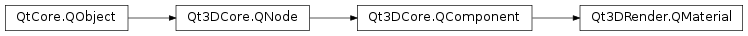

Qt3DRender.QMaterial¶
Inherited by: Qt3DExtras.QPhongMaterial, Qt3DExtras.QDiffuseMapMaterial, Qt3DExtras.QDiffuseSpecularMapMaterial, Qt3DExtras.QDiffuseSpecularMaterial, Qt3DExtras.QTextureMaterial, Qt3DExtras.QMetalRoughMaterial, Qt3DExtras.QGoochMaterial, Qt3DExtras.QMorphPhongMaterial, Qt3DExtras.QNormalDiffuseMapMaterial, Qt3DExtras.QNormalDiffuseSpecularMapMaterial, Qt3DExtras.QPerVertexColorMaterial, Qt3DExtras.QPhongAlphaMaterial
Synopsis¶
Functions¶
- def
addParameter(parameter) - def
effect() - def
parameters() - def
removeParameter(parameter)
Signals¶
- def
effectChanged(effect)
Detailed Description¶
Provides an abstract class that should be the base of all material component classes in a scene.
QMaterialprovides a way to specify the rendering of anentity. Any aspect can define its own subclass ofQMaterialso that a Material can be used to describe a visual element; for example, the way sound should reflect off an element, the temperature of a surface, and so on.In itself, a
QMaterialdoesn’t do anything. It’s only when it references aQEffectnode that aQMaterialbecomes useful.In practice, it often happens that a single
QEffectis being referenced by severalQMaterialcomponents. This allows to only create the effect, techniques, passes and shaders once while allowing to specify the material by addingQParameterinstances.A
QParameterdefined on aQMaterialis overridden by aQParameter(of the same name) defined in aQTechniqueFilteror aQRenderPassFilter.QMaterial *material1 = new QMaterial(); QMaterial *material2 = new QMaterial(); // Create effect, technique, render pass and shader QEffect *effect = new QEffect(); QTechnique *gl3Technique = new QTechnique(); QRenderPass *gl3Pass = new QRenderPass(); QShaderProgram *glShader = new QShaderProgram(); // Set the shader on the render pass gl3Pass->setShaderProgram(glShader); // Add the pass to the technique gl3Technique->addRenderPass(gl3Pass); // Set the targeted GL version for the technique gl3Technique->graphicsApiFilter()->setApi(QGraphicsApiFilter::OpenGL); gl3Technique->graphicsApiFilter()->setMajorVersion(3); gl3Technique->graphicsApiFilter()->setMinorVersion(1); gl3Technique->graphicsApiFilter()->setProfile(QGraphicsApiFilter::CoreProfile); // Add the technique to the effect effect->addTechnique(gl3Technique); // Set the effect on the materials material1->setEffect(effect); material2->setEffect(effect); // Set different parameters on the materials const QString parameterName = QStringLiteral("color"); material1->addParameter(new QParameter(parameterName, QColor::fromRgbF(0.0f, 1.0f, 0.0f, 1.0f); material2->addParameter(new QParameter(parameterName, QColor::fromRgbF(1.0f, 1.0f, 1.0f, 1.0f);See also
-
class
PySide2.Qt3DRender.Qt3DRender.QMaterial([parent=nullptr])¶ Parameters: parent – PySide2.Qt3DCore.Qt3DCore::QNode
-
PySide2.Qt3DRender.Qt3DRender.QMaterial.addParameter(parameter)¶ Parameters: parameter – PySide2.Qt3DRender.Qt3DRender::QParameterAdd a
parameterto the material’s parameters.
-
PySide2.Qt3DRender.Qt3DRender.QMaterial.effect()¶ Return type: PySide2.Qt3DRender.Qt3DRender::QEffectSee also
PySide2.Qt3DRender.Qt3DRender::QMaterial.setEffect()
-
PySide2.Qt3DRender.Qt3DRender.QMaterial.effectChanged(effect)¶ Parameters: effect – PySide2.Qt3DRender.Qt3DRender::QEffect
-
PySide2.Qt3DRender.Qt3DRender.QMaterial.parameters()¶ Return type: Returns a vector of the material’s current parameters
-
PySide2.Qt3DRender.Qt3DRender.QMaterial.removeParameter(parameter)¶ Parameters: parameter – PySide2.Qt3DRender.Qt3DRender::QParameterRemove a
parameterfrom the material’s parameters.
-
PySide2.Qt3DRender.Qt3DRender.QMaterial.setEffect(effect)¶ Parameters: effect – PySide2.Qt3DRender.Qt3DRender::QEffectSee also
PySide2.Qt3DRender.Qt3DRender::QMaterial.effect()
© 2018 The Qt Company Ltd. Documentation contributions included herein are the copyrights of their respective owners. The documentation provided herein is licensed under the terms of the GNU Free Documentation License version 1.3 as published by the Free Software Foundation. Qt and respective logos are trademarks of The Qt Company Ltd. in Finland and/or other countries worldwide. All other trademarks are property of their respective owners.